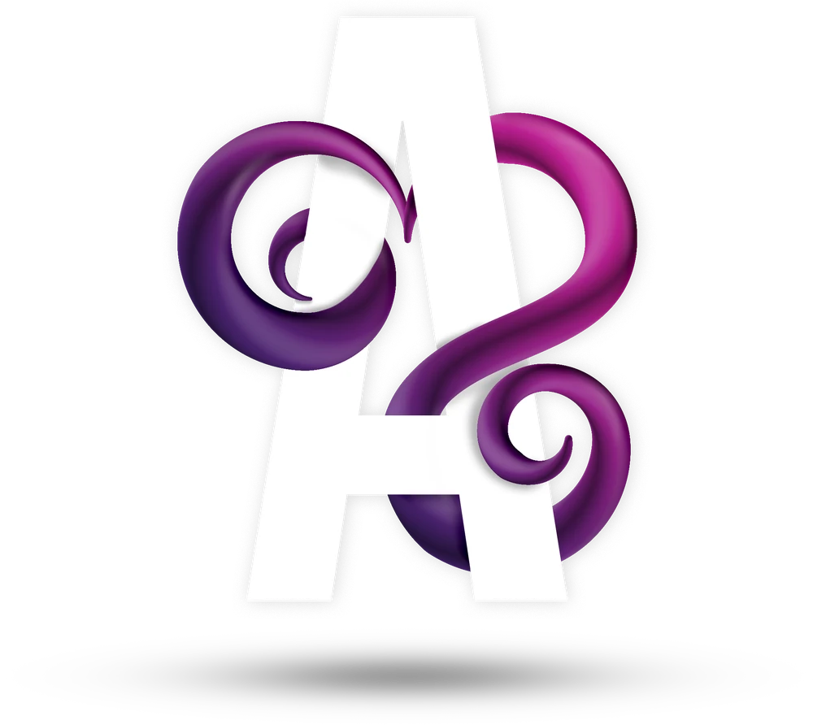

BUN DE TIPAR — PROOF #01
Ana Sărdan
Graphic & Motion Designer — București
Sunt Ana, graphic și motion designer din București. Fac imaginea de care are nevoie un brand (postări, bannere, ambalaje, print, video) și rămân cu fiecare proiect până când fișierul final e gata.
experiență
Lucrări selectate
MAI MULTE, ÎN CURÂND
Ce fac
PENTRU BRANDURI MICI ȘI MEDII
Motion & Video
Montez, colorizez și animez: de la un teaser scurt pentru social media până la povestea unui pacient. Dacă se mișcă, îmi place.
Social & Digital
Postări, story-uri, bannere, reclame. Mă asigur că arată ca un singur brand, nu ca zece diferite. Îți pot face și landing page-ul în Figma.
Print & Ambalaje
Cutii, cataloage, panouri, pliante. Pregătesc fișierele așa încât tipografia să nu te sune niciodată cu probleme.
Branding
Încă nu am o sută de logo-uri în portofoliu și nu mă prefac că am. Dar mi-ar plăcea să construiesc un brand de la zero și l-aș lua foarte în serios.
Cum lucrez
LA TIPAR
- 01
Mai întâi, vorbim
Povestește-mi despre brandul tău, cui vrei să te adresezi și unde va ajunge designul. Pun multe întrebări, dar ne scutește pe amândoi de timp mai târziu.
- 02
Apoi schițez
Pun pe masă câteva idei brute, nimic șlefuit încă. Tu îmi spui ce ți se pare potrivit și alegem împreună o direcție.
- 03
Fac designul
Acum îl construiesc cum trebuie: tipografie, culori, compoziție, mișcare. Am grijă să arate ca același brand peste tot unde apare.
- 04
Tu verifici
Îmi spui ce vrei schimbat și schimb. Verific și fiecare fișier pentru tipar și pentru fiecare platformă (dimensiuni, culori, bleed), ca să nu apară probleme mai târziu.
- 05
Bun de tipar
Fișierele finale ajung la tine, gata de postat sau de trimis la tipografie. Gata, ștampilat, poți merge mai departe.
Despre mine
STATUS: APPROVED
Îmi place să transform un brief încâlcit în ceva clar pe care oamenii chiar și-l amintesc.

Sunt Ana și fac graphic design de peste 10 ani — de la reclame, bannere și pliante până la editare foto care pune în valoare orice campanie.
În ultimii ani m-am mutat tot mai mult spre motion design și editare video, dar știu și ce se întâmplă în spatele unui site sau al unei scene 3D — de la HTML/CSS la 3DS Max.
Formarea mea în Marketing mă ajută să vorbesc limba Social Media și Digital Marketing la fel de bine ca limba Photoshop-ului.
-
10+ ani
de design, în companii și cu clienți.
-
Multe domenii
Dentar, retail, imobiliare, scule, print, jocuri mobile.
-
Print & online
De la ambalaje și panouri până la postări sociale și web.
-
Design & motion
Grafică statică și video, ambele făcute de mine.
Experiență
PREZENT
Graphic Designer
- Creez tot ce ține de imagine: de la ambalaje de produs la social media, grafică statică și video (Premiere/After Effects).
- Web & UX/UI: landing page-uri și elemente de interfață în Figma, plus modificări directe în site.
- Integrare AI pentru generare și îmbunătățire de imagini atunci când stocurile nu ajung.
- Suport operațional: organizat date și resurse de brand în Excel.
SEP 2022
Graphic Designer
- Landing page-uri, newslettere și materiale pentru campaniile lunare de reclame ale tuturor clinicilor.
- Retuș foto pentru fiecare imagine publicată online sau în print — contrast, curățare ten, scos obiecte.
- Editare video: testimoniale, infografice și prezentări, de la tăiat la colorizare și animat texte.
- Alte proiecte: decoruri de perete, formulare, bannere pentru exterior.
OCT 2020
Graphic Designer & Social Media Manager
- Bannere pentru campaniile lunare pe site, rețele sociale și reclame.
- Administrare conturi de social media — postări zilnice pe Facebook, săptămânale pe LinkedIn și Instagram.
- Urcat produse noi pe site.
OCT 2019
Graphic Designer / Specialist Marketing
- Toate materialele de reclame — online, print, indoor/outdoor, mesh-uri, broșuri, liste de prețuri.
- Căutat furnizori, cerut oferte, dat comenzi și urmărit producția și livrarea.
- Campanii Google & Facebook Ads și administrare Social Media.
MAI 2018
Graphic Designer
- Design de produs — cutii, manuale, etichete — și materiale promoționale online/offline.
- Refăcut site-ul în WordPress și urcat tot catalogul de produse online.
DEC 2015
Graphic Designer
- Campanii lunare pentru print și online: cataloage, afișe de vitrină, bannere animate.
- Fotografiat produse și prelucrat poze pentru magazinul online (fundal alb).
MAI 2015
Graphic Designer / Web Designer
- Redesenat site-ul companiei.
- Pregătit fișiere pentru tipar și ajutor pe design — cărți de vizită, tricouri, pliante.
OCT 2014
Graphic Designer Android/iOS
- Desenat interfețe și personaje pentru un studio de jocuri pe mobil.
Competențe
100% AVANSAT · 66% INTERMEDIAR · 33% BAZIC
Avansat
- Adobe Illustrator
- Adobe Photoshop
- After Effects
- Premiere Pro
Intermediar
- Figma
- Adobe InDesign
- HTML / CSS
- WordPress
- Office
- AI — Claude, ChatGPT, Gemini
Bazic
- 3DS Max
- Maya
- Corel Draw
- Adobe XD
- Blender
- Facebook Ads
- Google Ads
Studii
Universitatea Politehnica din București
Facultatea de Inginerie Aerospațială — Design Industrial și Grafică Ingineriască · Masterat
Universitatea Politehnica din București
Facultatea de Inginerie Aerospațială — Echipamente și Sisteme de Aviație · Licență
Cursuri
Atelierele ILBAH — 3DS MAX
Rezistența Online — Curs Google Ads & Marketing Online
Avantaj Consulting — Graphic Design
Fotografie Digitală
BUN DE TIPAR — SEMNAT PENTRU APROBARE